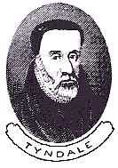

I have recently purchased an updated edition of William Tyndale's 1534 New Testament, republished by Yale University Press in 1989, (this edition in 1995). In it David Daniell has updated much of the Old English into the modern, so as to make it easier to read today. The translation itself is claimed to remain intact and faithful to the 1534 edition. In looking it over, some interesting items have come to light.
According to Mr. Daniell, the Bishop of London (Tunstall) hunted down every one of Tyndale's Bibles he could find and had them burned at St. Paul's cross. He very nearly succeeded in destroying them all, as only a dozen originals still exist today. What is not commonly known today is that much of the King James Version borrowed heavily from Tyndale's work, though he is not generally credited for it. At the time, King Henry VIII's chancellor, Sir Thomas More, had this to say about Tyndale- he calls him 'a beast', as one of the 'hell-hounds that the devil hath in his kennel', discharging a 'filthy foam of blasphemies out of his brutish beastly mouth'.
So what had Tyndale done in his translation that was so heretical? According to David Daniell, Tyndale had translated the Greek word for 'elder' as 'elder' instead of 'priest', he had translated the Greek word for 'congregation' as 'congregation' instead of 'church', the Greek word for 'repentance' as 'repentance' instead of 'penance' etc. Why were such differences important to the church? The Roman Church has priests, not elders. A congregation implies a locally autonomous group of believers guided by the Holy Spirit and not a hierarchical unified church subject to a Pope. The Roman Church is built on penance and indulgences to the priest and Church, not repentance to, and forgiveness from God. (See Martin Luther's 95 Theses on Indulgences, the debate that sparked the Reformation). In trying to faithfully render the Greek into English, Tyndale's translation exposed the errors of the church to the people, which quickly brought the wrath of the church down on him.
Tyndale is quoted by John Foxe as follows-
Master Tyndale happened to be in the company of a learned man, and in communing and disputing with him drove him to that issue, that the learned man said: 'We were better be without God's law than the Pope's. Master Tyndale, hearing that, answered him.
'I defy the Pope and all his Laws'; and said: 'If God spare my life, ere many years I will cause a boy that driveth the plough shall know more of the scriptures than thou dost'.
In his preface to his 1534 New Testament, Tyndale had this to say-
|  |
"Moreover, because the kingdom of heaven, which is the scripture and word of God, may be so locked up, that he which readeth or heareth it, cannot understand it: as Christ testifieth how the Scribes and the Pharisees had so shut it up (Matt 23) and had taken away the key of knowledge (Luke 11) that their Jews which thought themselves within, were yet so locked out, and are to this day that they can understand no sentence of the scripture unto salvation, though they can rehearse the texts everywhere and dispute thereof as subtly as the popish doctors of dunce's dark learning, which with their sophistry, served us, as the Pharisees did the Jews." |
Since there is more like the above quote from Tyndale, it is no wonder that the Roman Catholic Church declared him a heretic and had his Bibles burned. Indeed, at Vilvorde Castle near Brussels Belgium, on the 6th of October 1536, at the church's direction, the secular authorities* tied him to a stake, strangled him and then set fire to him. His last words are reputed to have been "Lord, open the King of England's eyes". Sir Thomas More also had John Tewkesbury, Richard Bayfield and James Bainham burned at the stake for not renouncing what Tyndale had written.
Tyndale's dying wish was soon granted. The Matthew Bible, which was published a year after Tyndale's death by John Rogers, a colleague of Tyndale, is largely Tyndale's work, and it was the first English Bible published under license from the King of England. (During the reign of "Bloody" Queen Mary however, John Rogers was imprisoned for a year and then burned at the stake on the 4th of February, 1555, for not accepting the doctrine of transubstantiation, denouncing "pestilent Popery" and other heresy). King Henry VIII also commissioned the Coverdale Bible which sold 20,000 copies within two years of its 1539 release. This became known as the Great Bible because of its size and was in its 7th edition by 1541. By royal decree, the Coverdale Bible was made available for the public to read at every parish church in the kingdom and was the official English Bible for 20 years. The Coverdale Bible was based on the Matthew Bible which was largely Tyndale's work. In 1604 King James also authorized the production of a "new" Bible in English, the 1611 Authorized or King James Bible, of which about 80-90% of the New Testament is attributable to Tyndale, and the same is true for that portion of the of the Old Testament that Tyndale had completed before his martyrdom.
* Today some Catholics will try to blame these persecutions on villainous
secular authorities. Please read the article  Thomas Aquinas' Summa Theologica on
Heresy and Heretics. As you will see, it was common practice, and
Roman Catholic teaching, for "heretics" to be turned over to secular
authorities for execution. This was nothing more than a transparent and quite
unsuccessful attempt to keep the blood off the hands of the Church. There is
biblical precedent for civil authorities being pressured into carrying out
executions for the church:
Thomas Aquinas' Summa Theologica on
Heresy and Heretics. As you will see, it was common practice, and
Roman Catholic teaching, for "heretics" to be turned over to secular
authorities for execution. This was nothing more than a transparent and quite
unsuccessful attempt to keep the blood off the hands of the Church. There is
biblical precedent for civil authorities being pressured into carrying out
executions for the church:
From Tyndale's 1534 New Testament (updated by David Daniell):
I for one, do not question that Tyndale will see the kingdom of God, not because of his mighty work, but because of his awesome faith that carried him on in the face of such adversity. Far from being a heretic, he was clearly a saint that will be able to face the judgment seat of Jesus Christ, boldly and without fear, because of that faith. The same holds true for other martyrs to the truth. Their reward in heaven will be great.Mark 15:1 And anon in the dawning the high priests held council with the elders and the scribes, and the whole congregation, and bound Jesus and led him away, and delivered him to Pilate.
Mat 27:20 But the chief priests and the elders persuaded the people, that they should ask Barabbas, and should destroy Jesus.
Mat 27:24 When Pilate saw that he prevailed nothing, but that more business was made, he took water and washed his hands before the people saying: I am innocent of the blood of this just person, and that ye shall see.
Mat 27:25 Then answered all the people and said: his blood be on us, and on our children.
Here is a picture of the first page of the  Gospel of St.
John online from the British Library, which has an original edition of
Tyndale's New Testament.
Gospel of St.
John online from the British Library, which has an original edition of
Tyndale's New Testament.
The ISBN for David Daniell's updated Tyndale's New Testament is 0-300-04419-4 for the hardback and 0-300-06580-9 for the paperback. It cost me a mere pittance- $15 dollars U.S. It cost William Tyndale his life, but millions of people who read their Bible in English today, are able to do so because of his courage.
Tyndale was in the process of translating the Old Testament when he was murdered. What he completed has also been updated to modern spelling by David Daniell and published by Yale University Press in 1992. The hardback is ISBN 0-300-05211-1 and costs around $45.